Lemon Poppyseed Muffins

What is it?
Lemon poppy seed muffins with tangy, citrusy flavor from fresh lemons and a subtle sweet, nutty flavor from poppyseeds. The poppyseeds add nice contrast to both the flavor as well as appearance of the muffin but the recipe is great with or without them. I love lemons but if you aren't a lemon person the recipe can be made with other citruses like orange.
Ingredients:
Muffins
- 1 1/8 cup flour
- 1 teaspoon baking soda
- Pinch of baking power
- 2 tbsp poppy seeds
- 1/2 cup granulated sugar or too taste
- 1/2 cup full fat yogurt
- 1/4 cup melted butter
- 3/8 cup milk
- 2 tablespoon lemon juice
- 1-2 tablespoon lemon zest
- Splash of vanilla extract
Glaze
- 1 cup sugar
- 1 tablespoon milk
- Optional lemon juice
Recipe
Muffins
- Preheat oven to 425 degrees Fahrenheit
- Add 1/2 cup sugar and lemon zest to a bowl 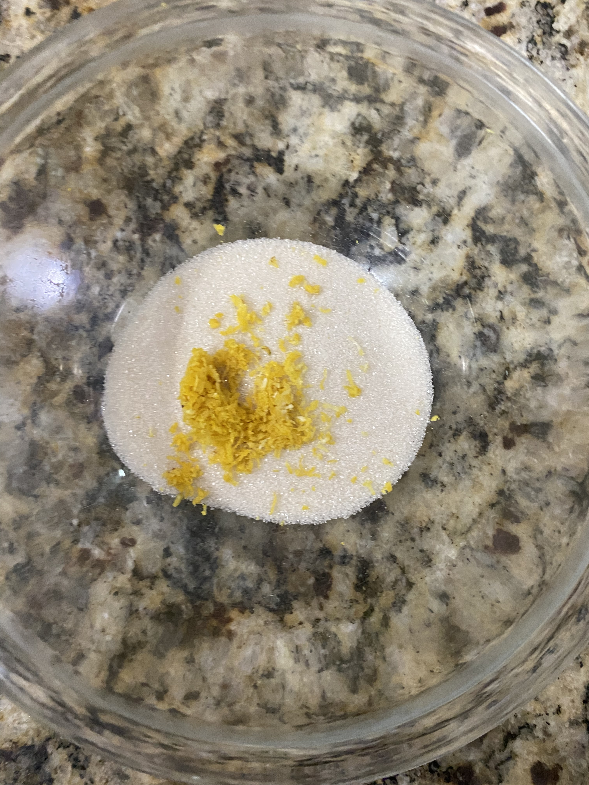
- Rub together with fingers to release more flavor and let sit 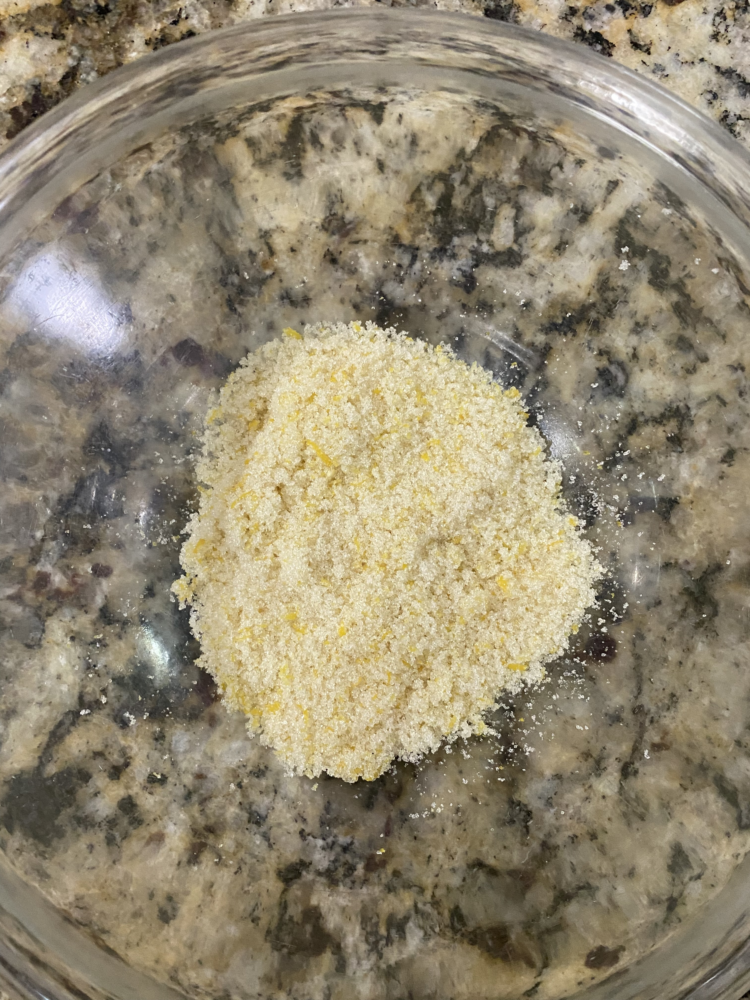
- Sift in flour, baking powder, baking soda, and salt into a mixing bowl
- Add poppy seeds and whisk till combined
- Melt butter and add to a seperate bowl
- Add yogurt, lemon juice, vanilla extract, and milk to same bowl and mix well 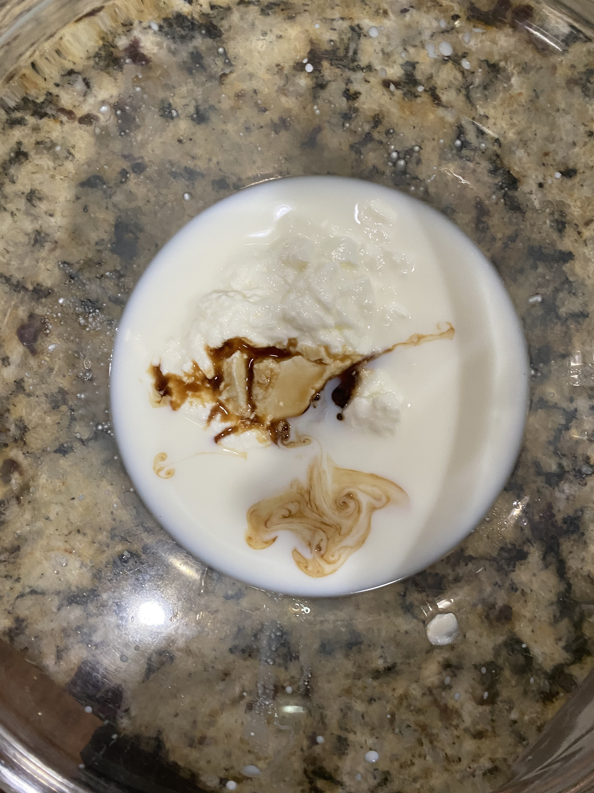 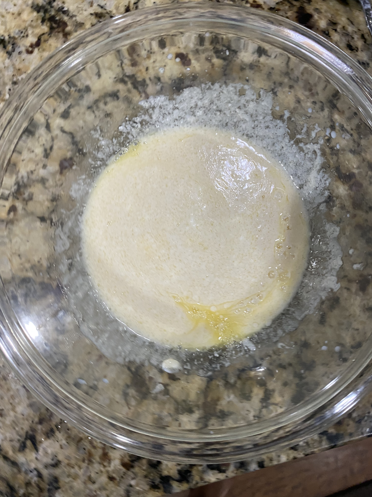
- Add both mixtures to same bowl and mix well 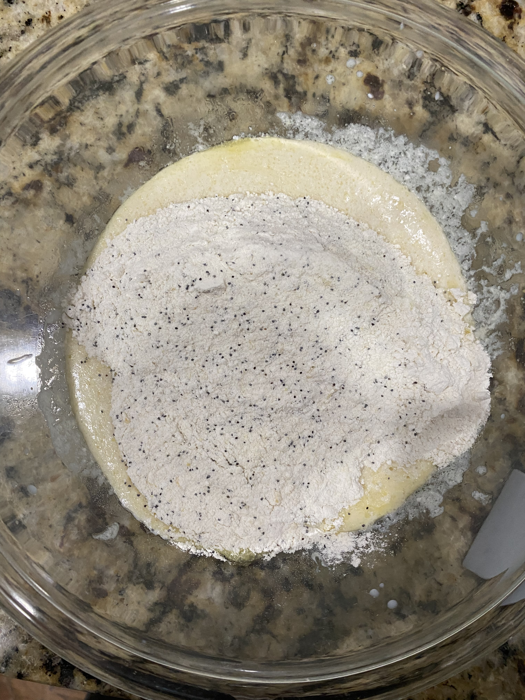 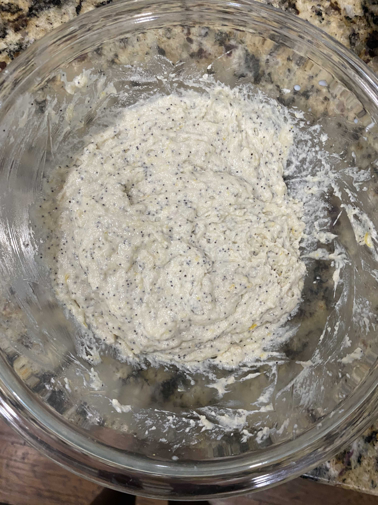
- Add to lined muffin tin and bake at 425 for 5 minutes
- Decrease heat to 350 and continue baking for 15 minutes 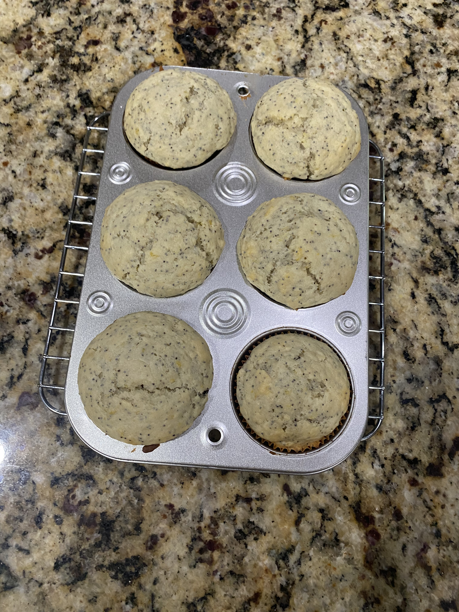
 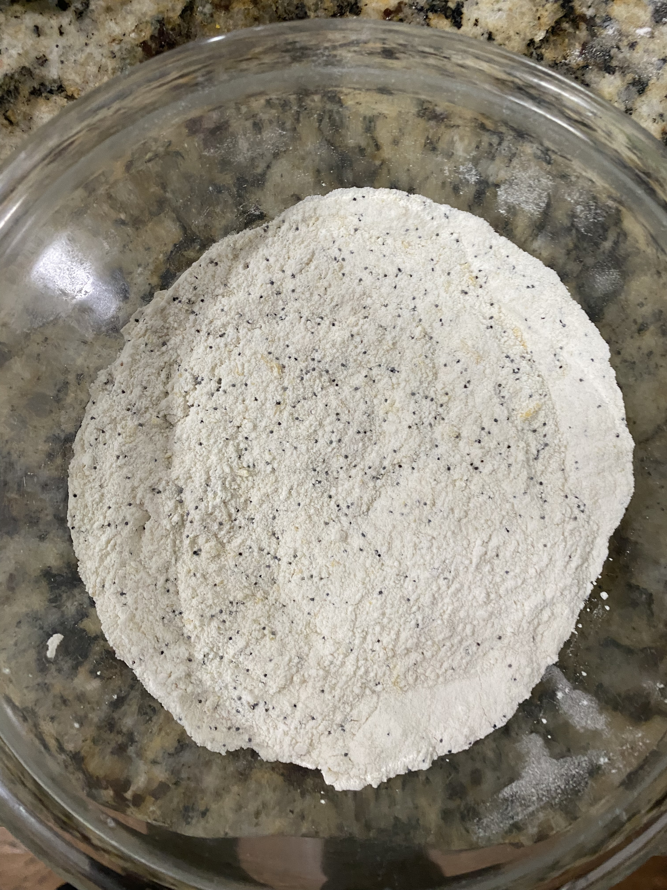
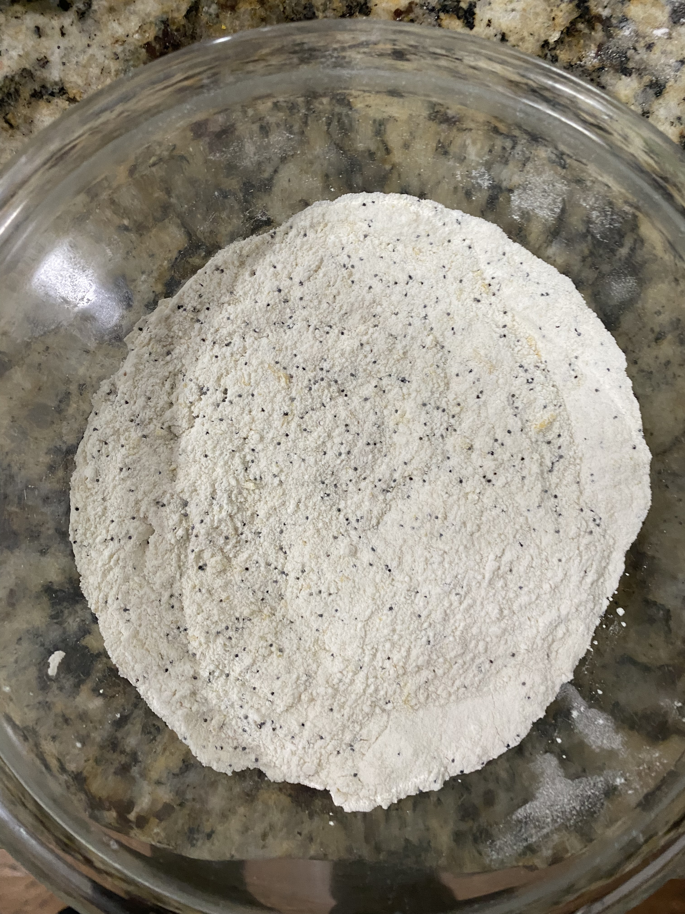

Glaze
- Add sugar and lemon juice to a bowl and mix
- Drizzle in milk until desired glaze consitency forms 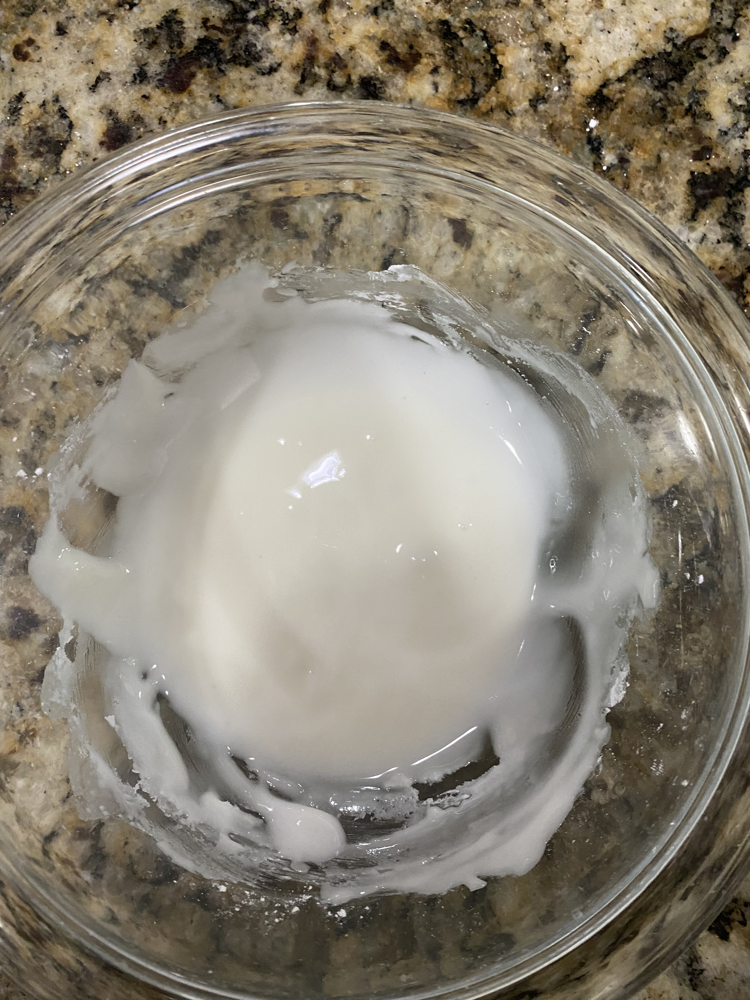
- Drizzle over muffins and enjoy 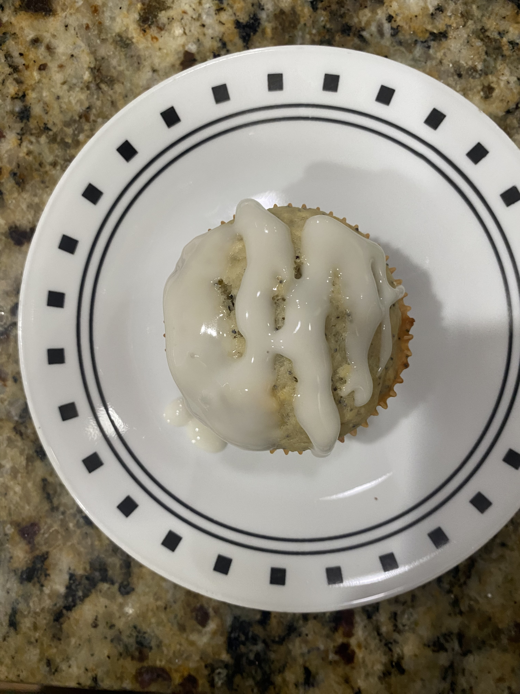